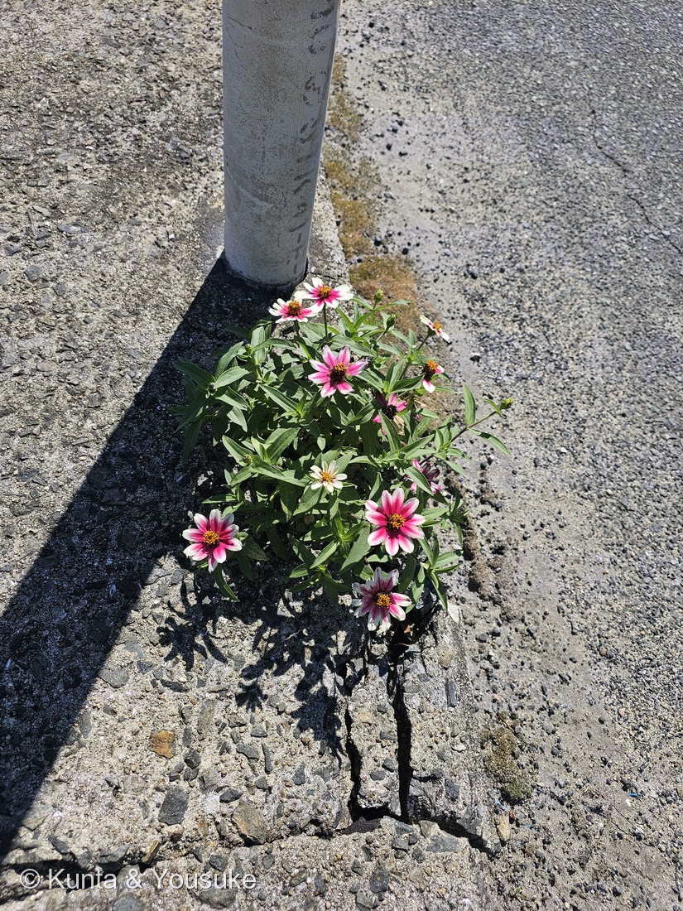
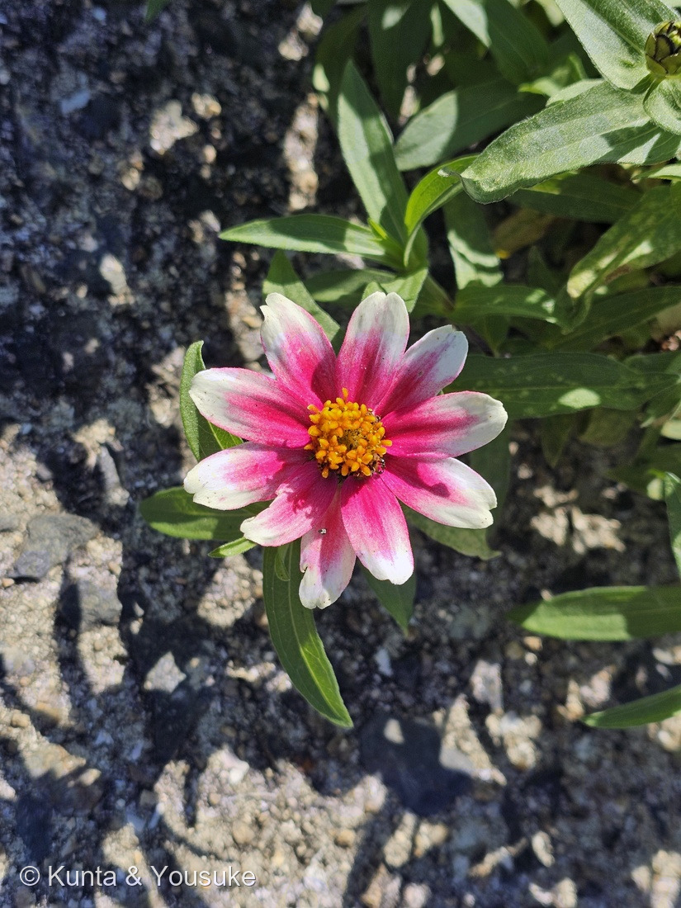
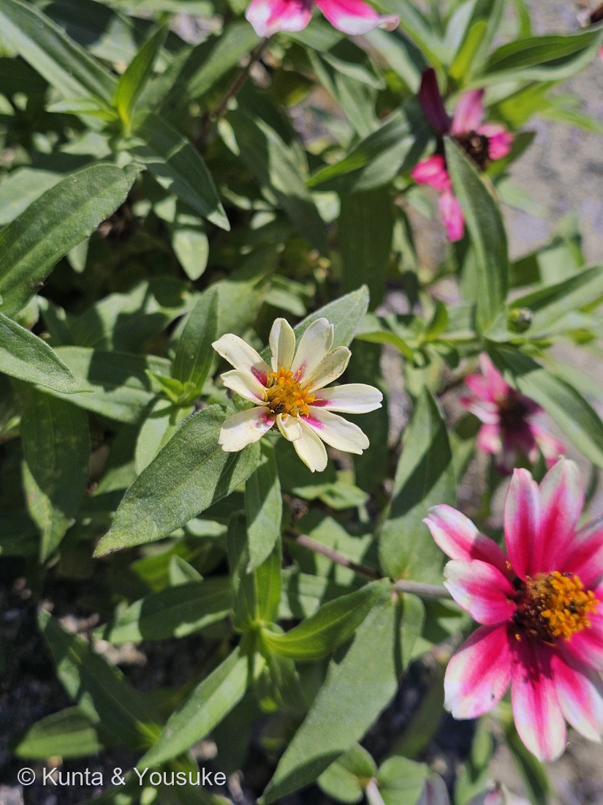

地図を読み込んでいるよ…
🔍 写真も地図も、押しているあいだ拡大して見られるよ（スマホは指を置いてすこし待ってね）。
🌍 の地図＝この子がもともと自生している場所を緑に。園芸雑種（人の手で生まれた子なので、野生のふるさとは無い）。両親のヒャクニチソウ（Zinnia elegans）とホソバヒャクニチソウ（Zinnia angustifolia）は、どちらもメキシコ生まれ。くわしくは下の地図の説明を見てね。
⭐人の手で生まれた雑種なので、野生のふるさとは無いよ＝1980年代にアメリカのメリーランド大学で作られた（botanic.jp）。⭐だから塗ったのは、両親のふるさとのメキシコ＝168 ヒャクニチソウはメキシコ・ホソバヒャクニチソウは「メキシコの北部と西部」で、アメリカ合衆国の南西部では野生化（英語版Wikipedia）。⚠アメリカは「生まれた場所」だけれど、ふるさととしては塗っていない。
⚠ 地図は国（日本と中国だけ県・省）までしか塗れないから、ほんとうの分布より広く見えていることがあるよ。地図はだいたいの場所。正確なところは、上の文を見てね。
ジニア・マリーランディカ
Zinnia × marylandica D.M.Spooner, Stimart & T.P.Boyle
品種 · たぶん 'Zahara Starlight Rose'（ザハラ・スターライトローズ）／別名 ジニア・ハイブリッド
キク科 · Asteraceae（ジニア属 Zinnia · キク目 Asterales）── ⭐168 ヒャクニチソウと同じジニア属＝168 と、168 のおまけのホソバヒャクニチソウの子ども
燻太さんの言葉「ピンクと白のコスモスみたいなキク科のお花。葉っぱとつぼみの雰囲気から、ジニアの品種かな？」── ⭐ジニアで当たり。葉が裂けていないのが、コスモスとのちがい
⭐⭐⭐⭐ 名前と学名の由来 ── メリーランドの名前をもった、生まれのはっきりした子
- ⭐⭐ 属名 Zinnia＝ドイツの植物学者ヨハン・ゴットフリート・ジンの名前から（くわしくは 168 ヒャクニチソウ）。
- ⭐⭐⭐⭐ 種小名 marylandica＝「メリーランドの」。⭐1980年代に、アメリカのメリーランド大学で作られた雑種だから（botanic.jp）。
- ⭐⭐⭐ 正式に名前がついたのは1991年＝論文の題は「ジニア・マリーランディカ、病気に強い新しい観賞用の雑種」（Spooner ら・Brittonia 43巻）。⭐名前をつけるもとになった株は、1988年にウィスコンシン大学で育てられた（NYBG）。
- ⭐⭐ 品種名 'Zahara Starlight Rose'＝Starlight は「星の光」・Rose は「バラ色」。⭐2010年に、アメリカの花の品評会 AAS（オール・アメリカ・セレクションズ）で花壇用の賞をとった（AAS）。
⭐⭐⭐⭐ この植物のこと ── ふたつの種の染色体を、まるごと両方もっている
- ⭐⭐⭐⭐ 両親は、図鑑の 168 ヒャクニチソウ（Z. elegans＝NYBG では Z. violacea の名前）と、ホソバヒャクニチソウ（Z. angustifolia）（NYBG・botanic.jp）。
- ⭐⭐⭐⭐ 染色体の数＝ホソバヒャクニチソウが 2n=22、ヒャクニチソウが 2n=24、そしてこの子は 46（NYBG）。⭐⭐22＋24＝46＝両親の染色体を、まるごと両方もっている（NYBG は「amphiploid」＝複二倍体と書いている）。
- ⭐⭐⭐ ねらいは「病気に強い」こと＝1991年の論文の題そのものが「病気に強い新しい観賞用の雑種」（Brittonia）。⭐AAS も、この品種の「斑点病とうどんこ病への強さ」をいちばんにほめている。⭐botanic.jp も「高温や乾燥、病気にも強い」と書いている。
- ⭐⭐ 姿＝葉は柄がほとんどなく、長さ5〜12cm・幅1.5〜4.5cmの披針形で、ふちはなめらか／頭花は舌状花を広げて径40〜60mm（NYBG）。⭐AAS の説明では、花は約6cm（2.5インチ）・草丈30〜35cm。
- ⭐ 暑さと乾燥に強く、花壇や鉢で、初夏から霜がおりるまで咲きつづける（AAS）。⭐だからコンクリートのすきまでも、10月に元気に咲けているのかもしれない（⚠ぼくの読み）。
- ⭐ 日本でよく見る「プロフュージョン」も、同じヒャクニチソウ×ホソバヒャクニチソウの種間雑種＝サカタのタネが胚珠培養で育てて、1999年から出まわっている（botanic.jp「ジニア・プロフュージョン」）。
⚠ 同定について ── 「コスモスみたい」だけど、葉が裂けていない
- ⭐⭐⭐ まず、ジニア属で決まり＝①葉が対生で、柄がなく、ふちがなめらか（写真①③）②頭花のまわりに舌状花、まんなかに黄色い筒状花の輪（写真②）＝168 ヒャクニチソウと同じつくり。
- ⭐⭐⭐ コスモスではない＝337 コスモスの葉は、細い糸のように羽状に裂ける。⭐この子の葉は1枚ものの細長い葉＝燻太さんの「葉っぱの雰囲気から」は、まさにここ。
- ⭐⭐⭐ ヒャクニチソウそのものでもない＝168の葉は長卵形で、つけねが茎を抱く。⭐この子の葉はもっと細長い披針形で、頭花も小ぶり＝NYBG の書くマリーランディカの葉（披針形〜倒披針形）に合う。
- ⭐⭐ 品種は、たぶん 'Zahara Starlight Rose'＝白い花びらに、根もとからバラ色のすじ（写真②）＝AAS の「white flowers with rose stripes」・NC State の「白にバラ色のすじ」にいちばん合う。
- ⚠⚠ でも、名札が無いので「たぶん」で止めておく。⚠同じ両親から生まれたプロフュージョンのほかの色や、ほかのシリーズを、写真だけで全部落とせたわけではないよ。
⭐⭐⭐ 1株の中の、白い頭花とピンクの頭花
- ⭐⭐⭐ 写真②の頭花はバラ色がこく、写真③の頭花はほとんど白で、根もとだけうすくピンク。⭐同じ株の中で、こんなにちがう。
- ⭐⭐ シカゴ植物園の説明＝「春や秋の涼しいころは、白い花びらの、まんなかの近くだけがピンクにそまる」。
- ⭐⭐ Karen's Garden Tips の説明＝「白い花びらにかこまれた、まんなかのバラ色が、だんだん濃くなる」。
- ⭐ だから白い頭花は、①涼しくなった10月だから ②咲いたばかりだから（写真③の花びらは、まだ広がりきっていない）、のどちらか、または両方かもしれない（⚠ぼくの読み・決められない）。
- ⏳ 同じ頭花を、日をおいてもう一度見れば分かるよ（宿題①）。
⭐⭐⭐ コンクリートの割れ目で咲いていた子
- ⭐⭐ 白い電柱の足もと、縁石のひびから、株がこんもり立ち上がっていた（写真①）。⭐葉の影まで、くっきり写っているね。
- ⚠⚠ どうやってそこに来たかは、写真からは分からない＝近くの花壇からのこぼれ種かもしれないし、だれかが植えたのかもしれない（⚠ぼくの読み）。
- ⭐ シカゴ植物園は「秋には、小鳥がこの子の種を食べにくる」と書いている＝種はちゃんとできる。
- ⏳ 花がおわったあと、実ができるか見てみたいな（宿題③）。
⭐⭐ 168 のおまけの「半分」に会えた
- ⭐⭐⭐ 168 ヒャクニチソウのおまけは「ホソバヒャクニチソウ」だった。⭐⭐この子は、そのホソバヒャクニチソウと、168 のヒャクニチソウの子ども。
- ⭐ だから「おまけの半分に会えた」ようなもの。⚠でもホソバヒャクニチソウそのものではないので、探したい植物のリストには、まだ残しておくよ。
⏳ 宿題 ── 4つ
- ⏳⭐⭐⭐ ①白い頭花を、日をおいてもう一度＝バラ色が濃くなっていくか。
- ⏳⭐⭐ ②寒くなると、どの花も白っぽくなるか（シカゴ植物園）。
- ⏳⭐ ③花がおわったあと、実ができるか＝こぼれ種で増えた子なのかの手がかり。
- ⏳⭐ ④おまけのジニア・ハーゲアナ＝葉の細さと花の色をくらべる。
参考：NYBG World Flora「Zinnia marylandica」（両親・染色体 22／24／46・amphiploid・1988年ウィスコンシン大学・葉と頭花の大きさ・Spooner ら 1991 Brittonia 43: 7-10）／botanic.jp「ジニア・マリーランディカ」（ヒャクニチソウ×ホソバヒャクニチソウ・1980年代メリーランド大学・高温や乾燥、病気に強い）／botanic.jp「ジニア・プロフュージョン」（サカタのタネ・胚珠培養・1999年）／All-America Selections「Zinnia Zahara Starlight Rose」（white flowers with rose stripes・2.5インチ・12〜14インチ・2010年花壇用の賞・斑点病とうどんこ病に強い・PanAmerican Seed）／NC State Extension「Zinnia marylandica」（白にバラ色のすじ）／シカゴ植物園「ZAHARA Starlight Rose Zinnia」（涼しいころはまんなかの近くだけピンク・秋に小鳥が種を食べる）／Karen's Garden Tips「Zahara Starlight Rose」（まんなかのバラ色がだんだん濃くなる）／英語版Wikipedia「Zinnia angustifolia」（ホソバヒャクニチソウはメキシコ北部・西部原産）／英語版Wikipedia「Zinnia haageana」（おまけ）